pip install geopandas folium matplotlib mapclassifyÜbung Visualisierung Zeckenstiche
In dieser Übung wollen wir mit unseren originalen und simulierten Zeckenstichen aus dem Block Programmieren eine interaktive Karte erstellen. Zudem werdet ihr weitere Tools und Tipps erhalten, wie ihr euer Jupyter Notebook aufwerten und zum Schluss Online über GitHub publizieren könnt.
Übung 1: Vorbereitung
Bitte ladet zuerst die Übungsdaten hier runter und entpackt diese.
Um technische Probleme zu vermeiden, haben wir heute eine ZHAW-eigene Cloud Lösung vorbereitet. Es handelt sich dabei um eine gehostete Version von Jupyter Lab, auf welche ihr euch mit eurem ZHAW Benutzername und Passwort einloggen könnt: statistik-ide.zhaw.ch. Klickt auf
+ New Sessionund wähltJupyterLabund gebt einen Session Namen ein.
Wer allerdings lieber lokal arbeiten möchte kann dies gerne tun, mit den Kentnissen aus Programmieren I - III sollte das gut möglich sein. Jedoch müssen diese noch das Programm Quarto installieren, sowie das fehlende Package Folium via conda installieren.
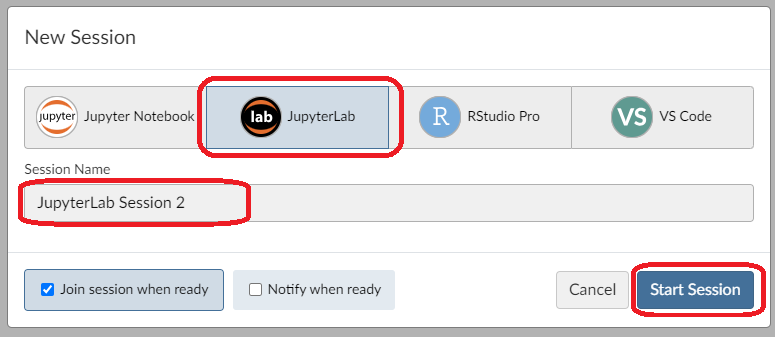
Wenn die Session geladen ist, könnt ihr eure Übungsdaten über den
UploadButton hochladen. Öffnet anschliessend ein neues Jupyter Notebook und speichert es unter dem Namenvisualisierung_zeckenstiche.ipynb.Nun müssen wir noch die Packages installieren, die wir in dieser Session haben wollen. Statt
condaverwenden wir jetzt allerdingspip, da die Serverlösung mit diesem Packagemanager arbeitet.
Startet nun das Kernel neu über Kernel -> Restart.
Importiert nun als erstes die zwei Packages geopandas und folium.
ModuleNotFoundError: No module named 'geopandas'Ladet zudem die drei Datensätze wald.gpkg, zeckenstiche_original.gpkg und zeckenstiche_simuliert.gpkg mit der read_file Funktion von Geopandas in euer Jupyter Notebook.
NameError: name 'gpd' is not definedÜbung 2: Base Map
Nun können wir unsere Karte bauen. Zuerst müssen wir eine Basiskarte erstellen, zu welcher wir dann die weiteren Layer hinzufügen können. Dazu nutzen wir nun Folium. Als Mittelpunkt der Karte wählen wir die WGS84 Koordinaten der Stadt Zürich (Zurich latitude: 47.36667, longitude: 8.55) aus.
# Zurich latitude longitude: 47.36667, 8.55
map = folium.Map(location=[47.36667, 8.55], zoom_start = 13, tiles = "cartodbpositron")NameError: name 'folium' is not definedIhr könnt mit den Tiles und dem Zoom Level experimentieren. Information zu den Tiles findet ihr hier.
Übung 3: Wald Layer hinzufügen
Nun wollen wir die Waldflächen als unseren ersten Layer hinzufügen. Ihr habt die .explore() Funktion bereits kennengelernt. Sie verfügt über diverse interessante Attribute, welche wir nun benutzen wollen.
Da unser Wald Datensatz aus zwei Zeilen mit Wald und nicht Wald besteht, müssen wir die Waldflächen zuerst noch rausfiltern.
Folium kann nur das weltweite CRS WGS84 (EPSG:4326) verarbeiten und da der Geodataframe Wald das Schweizer CRS CH1903+ / LV95 (EPSG:2056) verwendet, müssen wir dieses mittels to_crs() transformieren, bevor wir ihn visualisieren können.
Tipp: Wenn ihr am Schluss des Commands ein ; hinzufügt, wird kein Output generiert. Somit wird nicht für jeden Layer den wir hinzufügen, eine Karte erstellt.
# Wald zur Karte hinzufügen
is_wald = wald[wald["Wald_text"] == "ja"] # Selektieren nur den Wald
is_wald.to_crs(4326).explore(
m = map, # Fügt diesen Layer der Map map hinzu
color = "green", # Der Layer wird grün dargestellt
tooltip = False, # Es werden keine Daten angezeigt, wenn man über ein Objekt hovered.
highlight = False, # Das Objekt wird nicht hervorgehoben, wenn man darüber hovered.
name = "Wald" # Der Name des Layers
);Übung 4: Original und simulierter Zeckenstich Layer hinzufügen
Nun wollen wir neben dem Wald Layer (Polygon) den originalen Zeckenstiche Layer (Punkte) hinzufügen. Kopiere dazu den unteren Code.
# Original Zeckenstiche zur Karte hinzufügen
zeckenstiche_original_gpd.to_crs(4326).explore(
m = map, # Fügt diesen Layer der Map map hinzu
color = "red", # Der Layer wird rot dargestellt
marker_kwds = dict(radius = 1, fill = True), # Optionen für das Aussehen der Punkte
tooltip = "ID", # Beim Hovern über das Objekt wird die ID dargestellt
name = "Original Zeckenstiche" # Der Name des Layers
);Nun wollen wir die simulierten Zeckenstiche darstellen. Als Vorlage könnt ihr den Code von oben kopieren. Erweitere die Funktion explore um folgende Logik:
- Gerne würden wir die Spalte “Radius” mit der Farbvariation viridis visualisieren. Nutze hierfür die Attribute
columnundcmap. - Zudem soll die Legende des Layers dargestellt werden. Zudem wollen wir keine Colorbar als Legende haben. Nutze dafür die Optionen der Legende
legend_kwds = dict(colorbar = False). - In den Tooltips sollen neben der ID noch der Radius und der Run dargestellt werden.
- Nenne den Layer “Simulation Zeckenstiche”.
Weitere Informationen zur explore Funktion findet ihr hier.
Übung 5: Layer Control hinzufügen
Zum Abschluss wollen wir noch ein Layer Control hinzufügen, damit wir die verschiedenen Layer ein- und ausblenden können. Schaut dafür im User Guide von Folium und sucht nach der Layer Control Funktion und versucht diese eurer map hinzuzufügen. Zum Schluss kannst du die map aufrufen, damit diese Dargestellt wird. Das finale Produkt sollte wie folgt aussehen:
NameError: name 'folium' is not definedmapNun ist unsere Map fertig. Inspiziert diese und spielt mit den Radien und Runs herum und versucht auch die Grössen und Farben der Points anzupassen, bis Ihr mit dem Resultat zufrieden seid.
Übung 6: Notebook verschönern
Input
Um unser Notebook zu verschönern werden wir das hilfreiche Tool Quarto verwenden. Dieses erlaubt es uns dynamischen Output zu generieren und ist eine Erweiterung zum klassischen Markdown. Mithilfe von Quarto kann euer Code in diverse Formate (PDF, HTML, ePub, und weitere) transformiert werden.
Vorbereiten von Quarto
Fügt ganz oben in eurem Notebook eine neue raw Cell ein und kopiert folgende Metadaten für Quarto. Dies bewirkt, dass euer Quarto Output ein Titel und Autor hat. Zudem sagen wir Quarto das wir mit Python3 arbeiten. Für unseren Ausgabeformat, welches HTML sein soll, definieren wir folgende global Optionen:
embed-resources: true: Generiert ein einzelnes HTML File.code-fold: true: Alle Code Cells werden eingeklappt.
---
title: Visualisierung Zeckenstiche
author: Vorname Nachname
jupyter: python3
format:
html:
embed-resources: true
code-fold: true
---Quarto gibt uns zudem die Möglichkeit unser File als Vorschau darzustellen. Öffne hierfür eine neue Konsole, indem du auf das grosse + in Jupyter Lab klickst. Wähle unter Other das Terminal aus. Mit dem Command quarto preview visualisierung_zeckenstiche.ipynb erhaltet ihr ein Preview im Internet Explorer.
Cell Options
Cell Options können dazu benutzt werden, um das Verhalten einer Cell zu verändern. Dabei werden diese Optionen mittels des Vorschubs #| am Anfang der Cell eingefügt. Wenn ihr eine Option für alle Cells haben wollt, könnt ihr diese als globale Optionen in den Metadaten von Quarto setzen (analog zu code-fold: true).
#| echo: false
#| code-summary: This is a Title for a collapsed Code Block
Python Code...Die häufigsten Options sind:
eval: Soll die Code Cell ausgeführt werden.echo: Soll der Code der Cell angezeigt werden.output: Soll der Code Output dargestellt werden.code-fold: Soll die Code Cell eingeklappt werden.code-summary: Wenncode-foldauftruegesetzt ist kann ein Titel für die Code Cell gesetzt werden.
Es gibt aber noch viele weitere Möglichkeiten (siehe hier).
Page Layout
Mit Quarto könnt ihr euer Webseiten Layout relativ einfach anpassen. Ihr könnt zum Beispiel mit folgendem Code ein Grid erstellen, welcher aus zwei Spalten besteht. Eine Spalte ist 9 und die Zweite 3 breit. Die Gesamtbreite ist immer 12.
::: {.grid}
::: {.g-col-9}
Text 1
:::
::: {.g-col-3}
Text 2
:::
:::Weitere Möglichkeiten findet ihr hier.
Tabellen
Eine Tabelle muss nach folgender Markdown Syntax erstellt werden (siehe Quarto Tables):
|Name |Gender|Age |Origin |
|-----|:-----|:---:|:-----:|
|Jack |Male |23 |USA |
|Susan|Female|22 |Canada |
: Name der Tabelle {#tbl-names}- Die erste Zeile ist die Tabellenüberschrift
- Die zweite Zeile beinhaltet Bindestriche “-” und optionalen Doppelpunkten “:”, um den Text in den Spalten auszurichten.
:---für die linke Ausrichtung:---:für die mittlere Ausrichtung---:für die rechte Ausrichtung
- Die weiteren Zeilen beinhalten der Tabelleninhalt.
- Mit dem : unter der Tabelle kannst du den Namen der Tabelle definieren. Mit
{#tbl-???}kannst du den Namen für einen Querverweise im Text erstellen. Dieser kann dann mittels@tbl-???im Text aufrufen.
Eine praktische Hilfe für das Erstellen einer Tabelle ist der Tablesgenerator.
Bilder
Ein Bild kann ebenfalls via Markdown Syntax hinzugefügt werden. Zuerst folgt die Caption des Bildes, gefolgt vom Bild selbst. Mit {#fig-???} kannst du einen Querverweis für das Bild erstellen. Gleich wie bei der Tabelle kannst du ihn im Text mittels @fig-??? aufrufen.
{#fig-???}Weitere Information findet ihr auf Quarto.
Aufgabe
Seht euch die Webseite an. Versucht nun die Struktur dieser Webseite so gut wie möglich in eurem Jupyter Notebook nachzubauen. Nutzt dafür die oben beschriebenen Methoden. Das Bild findet ihr in den Übungsdaten.
Benutze zudem die Cell Options um euren Code sauber darzustellen. Nutzt dazu echo und output um unnötige Cell Codes und Outputs nicht auszugeben. Benenne zudem alle eingeklappten Code Cells sinnvoll mittels code-summary.
Übung 7: Notebook in HTML konvertieren
Damit wir nun unser Jupyter Notebook publizieren können, müssen wir davon einen HTML Output generieren.
Dazu nützen wir wieder Quarto in der Konsole. Aber anstelle des preview Commands nutzen wir den render Command, sprich quarto render visualisierung_zeckenstiche.ipynb. Da wir in den Quarto Metadaten als format HTML angegeben haben, wird Quarto ein HTML File generieren.
Ändere zum Schluss den Namen des HTML Files auf index.html, damit später GitHub Pages das File automatisch als Startseite erkennt. Mit Rechtsklick auf das File kann über Download das HTML File heruntergeladen werden.
Übung 8: GitHub und Publizieren
Hinweis
GitHub ist eine webbasierte Plattform, die Hosting für Git-Repositories bereitstellt. Es bietet Tools für die Zusammenarbeit, Codeüberprüfung und Projektverwaltung. GitHub wird von Entwicklern weit verbreitet genutzt, um Open-Source-Projekte zu teilen, dazu beizutragen und zusammenzuarbeiten. Es bietet auch Funktionen wie die Verfolgung von Problemen (Issues) und Pull-Anfragen (Pull Requests).
Registriert euch mit eurer privaten Email Adresse auf GitHub.
Nun da ihr eingeloggt seid, könnt ihr euer Repository erstellen. Drücke hierfür oben rechts auf euren Avatar und wähle dann “Your repositories”. Klicke anschliessend auf das grüne Symbol “New”. Im neuen Fenster kannst du nun einen Namen für dein Repository definieren. Zudem kannst du die Sichtbarkeit des Repository anpassen, aber wir belassen es bei Public, damit wir dann auch das HTML File publizieren können. Schliesse das Ganze mit “Create repository” ab.
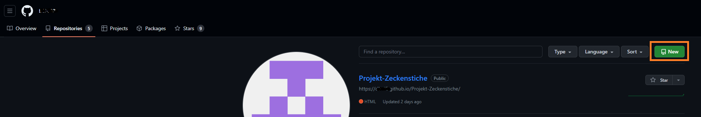
Repository erstellen Schritt 1 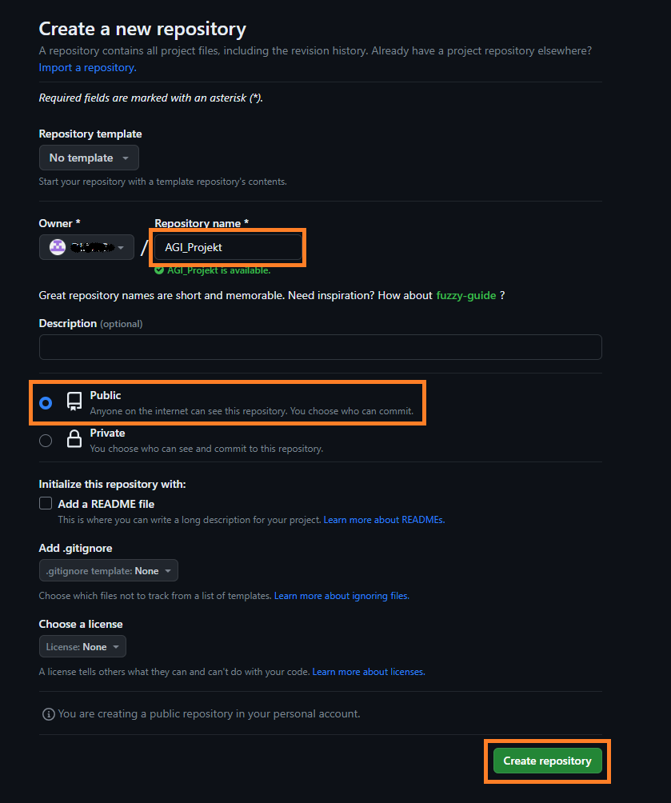
Repository erstellen Schritt 2 Nun hast du ein leeres Repository. Es gibt verschiedene Möglichkeiten nun Daten in dieses Repository zu kriegen. Am einfachsten ist aber das direkte Hochladen von Files. Klicke hierfür auf “uploading an existing file” und ziehe anschliessend das Jupyter Notebook und dein daraus generiertes HTML File (
index.html) in den Explorer. Gib eine kurze Commit Beschreibung und klicke auf “Commit changes”.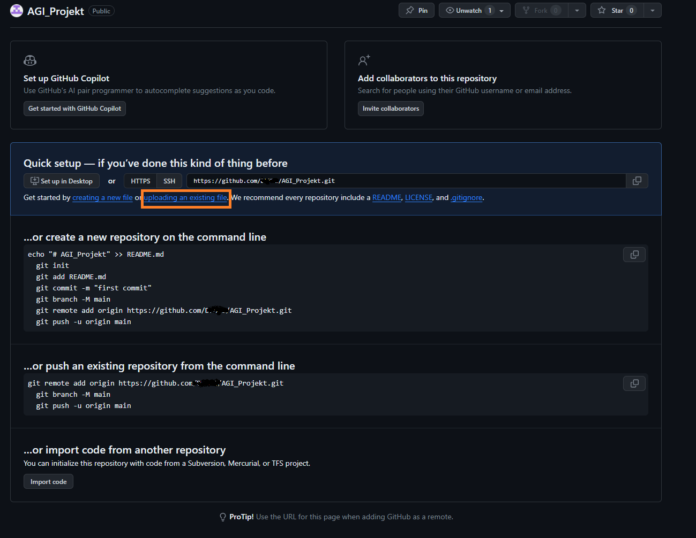
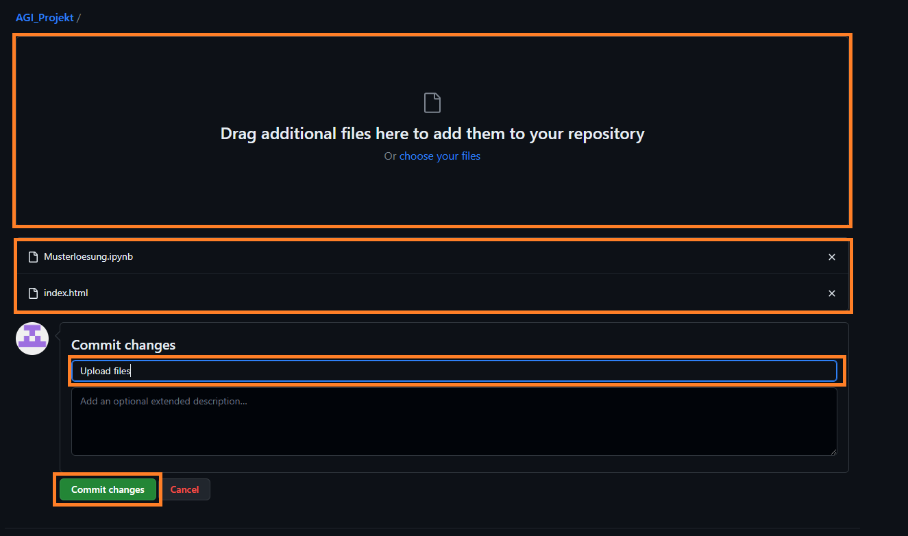
Update existierende Files
Wenn ihr nochmals Änderungen an den Files vornehmt, könnte ihr diese auf der Repository Seite über Add File vornehmen. Achte darauf das die Files den gleichen Namen haben, damit wird sichergestellt, dass das auf GitHub existierende File überschrieben wird.
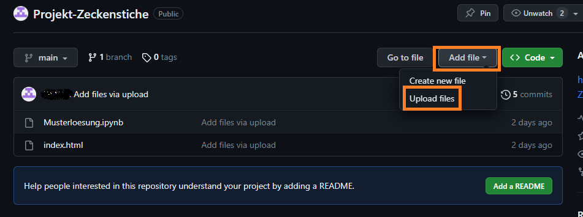
Ihr seht nun eure Files im Repository. Geht nun auf Einstellungen um eure Webseite zu Publizieren.
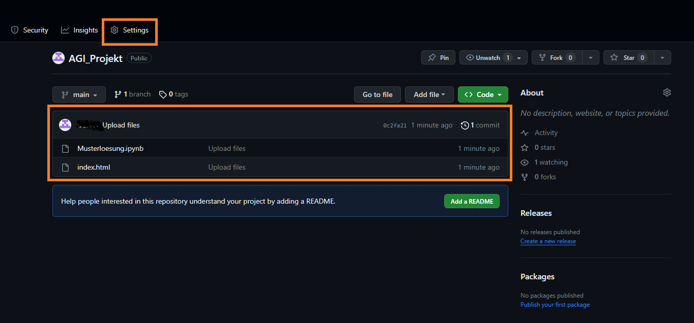
Geht auf Pages und setzt bei Branch die Einstellungen auf
mainund/rootund klickt auf Save. Dies bewirkt, dass GitHub nun nach einem index.html in deinem main Branch sucht und aus diesem eine Webseite macht.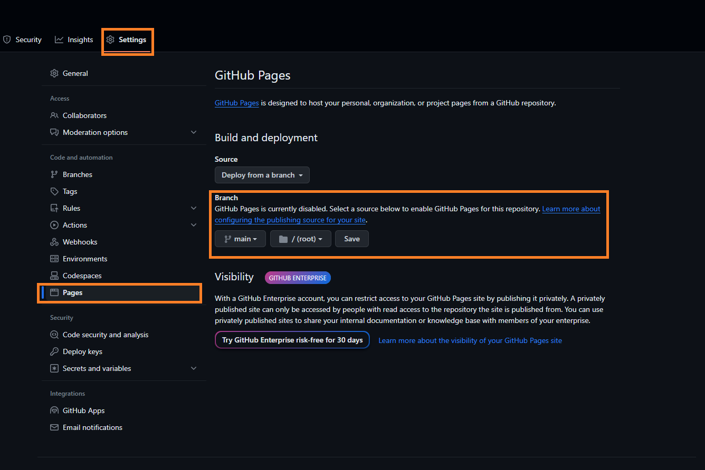
Diesen Vorgang könnt ihr unter Actions finden. Sobald der orange Punkt zu einem grünen Häkchen wird, ist die Webseite fertig erstellt.
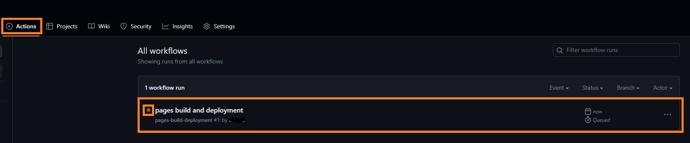
Kehr nun zurück zu Pages in den Settings. Ihr sollten nun eine URL sehen, auf welcher eure Webseite läuft.
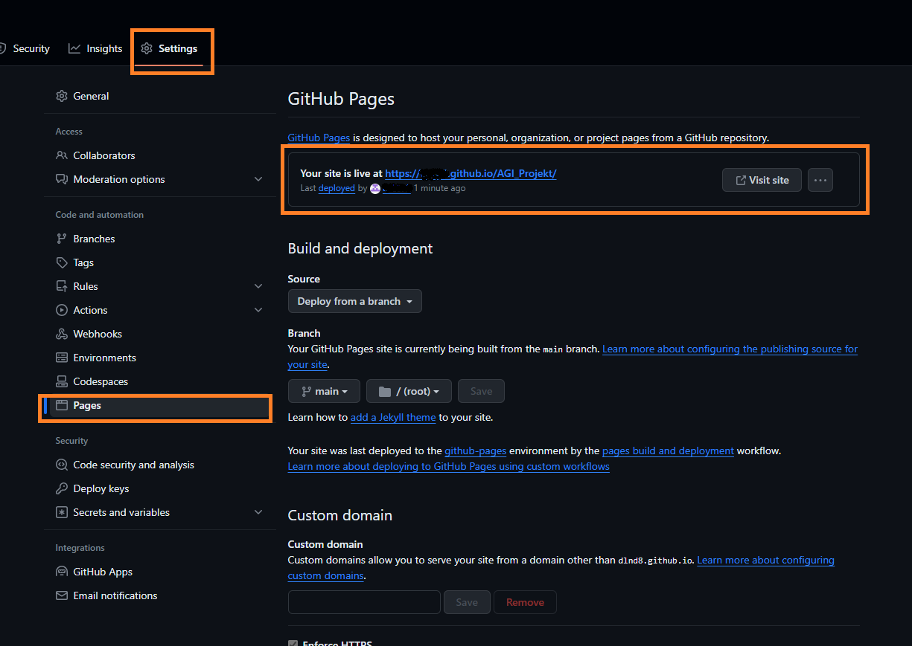
Zum Abschluss könnt ihr diese URL im About des Repositorys hinzufügen. Dies macht es euch einfacher auf die Webseite zuzugreifen, da ihr nicht immer den Link in den Settings suchen müsst, sondern direkt in eurem Repository angezeigt wird.
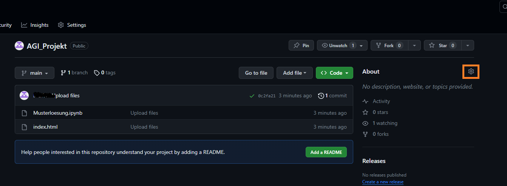
Kopiere hierfür die URL und gehe auf den Code Tab und wählt dort das Rädchen neben dem About. Im Feld Webseite könnt ihr nun die URL reinkopieren. Speichert das mit “Save Changes”. Nun sieht ihr unter dem About eure Webseite.
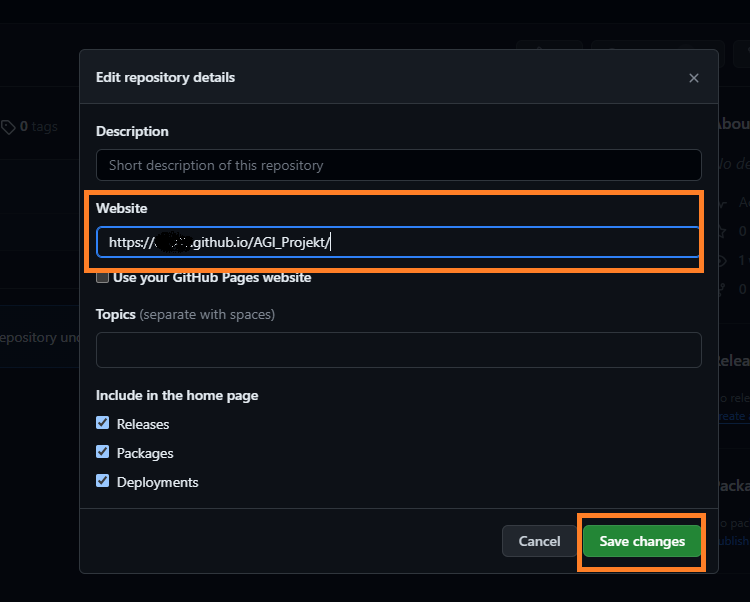